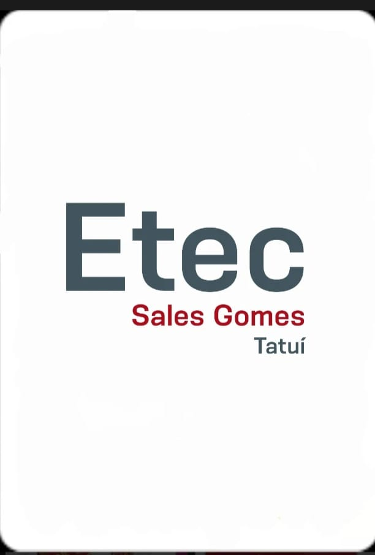

Parabéns, você conseguiu passar do jogo da memória!
Agora, consegue encarar essa?
Josnei já tem a metade da divida, graças a você!
Agora ele está tentando ganhar em uma aposta de Jogo de Cartas mais conhecido com 21 de um cara que Josnei encontrou no metro
A sua missão agora é ganhar do cara, se a soma das cartas der um total de 21, Josnei ganha! Caso contrário, Josnei perde tudo e estará 'lascado' com o Marreta!
Vamos Juntos? É só clicar na carta e BOA SORTE!
